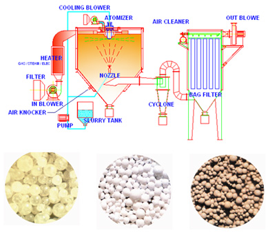

喷雾乾燥机是一种利用热风的连续乾燥装置，将浆料瞬间乾燥成粉末的机器，并且经由气流的运送，利用适当的收集方法，收集乾燥後的原料。
利用特殊的喷嘴(压力式或二流体式)丶或者是高速旋转圆盘(离心式)把浆料球粒化，使其表面积增大，并同时施以连续的热风，以达到瞬间乾燥的目的。因此喷雾造粒技术应用於对热敏感的材料也鲜少有变质的情形，而且可以省略浓缩丶过滤丶粉碎丶分级丶乾燥等繁琐的工程。
此外，粉体乾燥成品成球形，所以流动性佳，对於食品业来说，其优点为易溶於水；对於电子材料丶粉末冶金丶精密陶瓷来说，可以制造出高密度且一致性的产品。 |
 |
| |
|
|